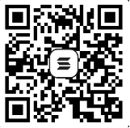

社群與資源
歡迎您加入我們的社群進行討論。
社群群組：
-
Line：加入
- Telegram：加入
- 電子信箱：inforec.eth@ud.me
資源： 為讓系統有足夠的資源支持運作，歡迎您提供資源：
-
購買：為利於軟體推展，並測試虛擬貨幣是否可用於支付，僅接受SOL虛擬貨幣。
- 主網類型：Solana
- 錢包地址：AWcif9F1t3hYZwyiAKz49ad3MT2H8MSKnURvCgui8e2b
- 錢包地址QR Code：
- 虛擬貨幣金額：2個SOL幣

備註：
-
保固服務條款：
- 使用期限：無
- 保固：保固期限為1年，過保後可購買延長保固。
- 保固內容：軟體更新、現有文件設定更新、本軟體有關之咨詢服務。
- 文件設定：現有可提供下載之文件設定檔(已逾400件)，完全免費下載使用。如果找不到您要的設定檔，可由我們協助完成相關設定。
- 優惠：即日起至2025/03/31日止，免費提供2個專屬客製化文件設定服務，
- 軟體介面語系：如果需要增加您慣用的語系，請與我們聯絡，應謝謝。
-
虛擬貨幣：在許多的地區，虛擬(加密)貨幣並不是貨幣，因為它不穩定，僅類似為代幣如游戲代幣，但可以全球化支付、沒有區域限制，容易取得及交換，且成本低廉。
- 本軟體理念，將真實的記錄轉為數位化，數位化的資訊，提供現實生活動決策運用，因此接受虛擬貨幣捐助。
- 激勵：若能獲得使用者捐助，對於軟體提供者是一種鼓勵，也能讓我們投入更多的資源，讓軟體更加的完善
-
反饋捐助：如有獲得捐助，我們將提撥一定比例資源給社會慈善團體、或與本案有關免費工具軟體提供者，期待更好的社會環境，